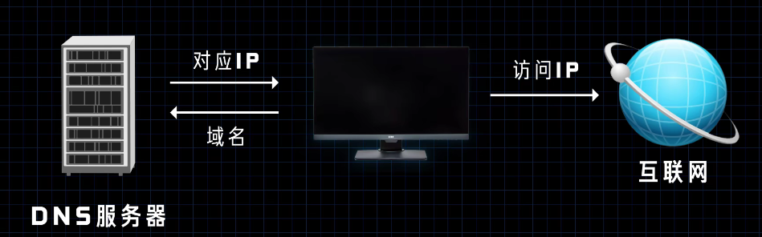
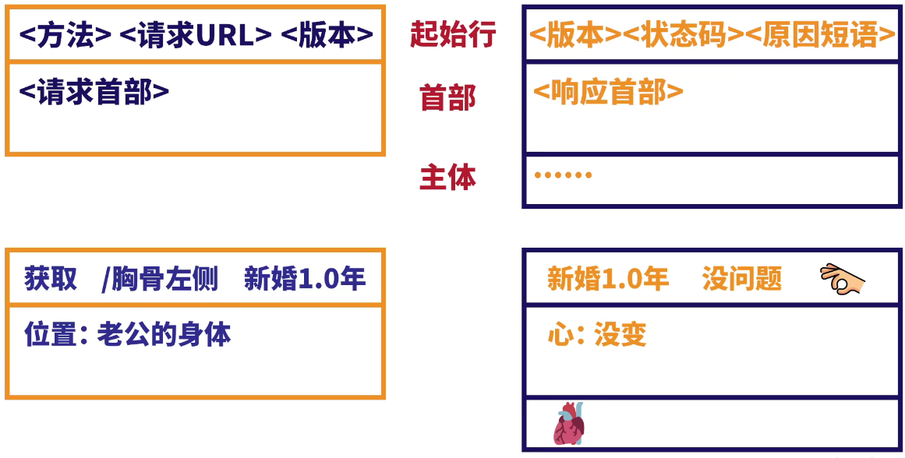

包含DNS、HTTP和浏览器工作原理的有关知识…
DNS
一、DNS服务器
电脑上记录着类似电话本的数据，域名和IP地址一一对应，类似于姓名和手机号，手机号不好记，但是姓名好记。
记录这些数据的文件就是hosts文件。
当我们输入网站的域名比如 www.baidu.com 时，系统无法通过域名直接访问到网站，而是先在电脑中查找hosts文件，找到其对应的ip地址，电脑去访问这个ip而不是域名。
但是电脑上存储的host文件是有限的，不可能保存全世界所有域名和ip，于是有服务器专门用来存放这些数据。
电脑访问服务器，获得域名对应的ip，然后根据ip去访问网站，这个服务器就是DNS服务器。

二、域名劫持和污染
我们的电脑在访问DNS服务器时，因为别人非法的操作导致我们获得了错误的ip，这样就访问到别的网站了。如果这种网站如果是原网站的克隆网站，就可以完成盗号等操作。
HTTP
一、协议
http的核心就是一个协议（protocal），是什么之间的协议呢？
http是客户端和服务端之间进行网络通信的协议。
客户端是主动型，发送请求报文；服务端是被动型，收到请求报文之后就发送响应报文。
二、请求报文和响应报文
http规定了请求报文和响应报文的格式。
请求报文中，包含：方法，URL，http版本，请求首部；
响应报文中，包含：http版本，状态码，原因短语，响应首部，然后是资源。

- 方法：
GET,POST
GET是一种获取的方法，POST偏向于传输和提交数据的方法。
- 状态码：
2xx 成功
3xx 重定向
4xx 客户端错误
5xx 服务端错误
- 响应首部：
content-type: 内容类型，服务器会返回不同类型的数据，有了首部显示文件类型浏览器就能更清楚如何去处理这些不同类型的数据。
三、应用层
把网络通信按照TCP/IP模型划分，从上到下分为应用层、传输层、网际层和网络接口层；
传输层协议用来配合定义传输数据的方式，有TCP和UDP；
http是应用层协议，TCP是传输层协议；
TCP有三次握手机制，比较可靠。
四、非持久和持久连接
每个请求报文只能写一个url，即只能请求一个资源路径。随着互联网的发展，一次一个请求的方式很难满足实际需求，而且每次都要进行一次TCP连接。因此在http 1.1中，默认连接为持久连接，服务端返回消息之后不会关闭连接，客户端可以继续发送下一个请求，知道没有要请求的了，客户端发送connection: close 首部给服务端，这样服务端就关闭了。
五、无状态和状态管理
如果互联网每一台主机都来访问服务器，而服务器要把它们每一个的状态都记录下来，会崩溃。所以服务器不会把每个客户端的信息都记录下来，这就是服务器的无状态。
但是目前很多网站都有用户登录功能，如果是无状态，访问一次之后第二次又要重新登陆，为了保存用户状态就有了cookie技术，这项技术需要在首部字段加上cookie信息，这样就能保持登录状态。
浏览器的工作原理
包括从输入一个域名url到页面加载完成的所有步骤：
一、获取html代码
浏览器根据url在DNS服务器上找到域名对应的网站ip，通过ip找到提供网站内容的服务器；
浏览器和服务器建立连接的过程：通过TCP协议，三次握手，现在https协议会增加TLS握手，建立加密的隧道，保证数据传输不被监听和篡改；
浏览器和服务器之间建立连接，浏览器发送request请求数据，服务器给他html代码，会先给14kb，然后浏览器慢慢下载其他文件；
收到html代码之后，浏览器开始渲染网页。
二、浏览器工作过程
4.1 构建DOM树 ：DOM树是html文档在浏览器中的对象表示，浏览器解析html的时候是顺序执行的，只有一个主线程，碰到script标签就加载js文件并执行里面的代码，执行完成之后再继续。如果碰到图片和css文件、async或者defer标签，它们不会影响主线程，而是异步加载。此外，浏览器有一个预扫描线程，提前把css文件、字体、js下载下来，也是异步的，不会影响主线程。
4.2 构建CSSOM树： CSSOM树是css在浏览器中的对象表示。
4,3 合并DOM和CSSOM树：浏览器会从DOM的根节点开始，合并CSSOM中的样式到DOM中的每个节点，形成一棵渲染树。
4.4 布局 ：形成渲染树之后，浏览器会根据样式计算每一个可见节点（未设置dispaly为none的节点）的宽高和位置等，对所有节点进行布局规划，对于图片这样的节点，如果没有指定宽高，那浏览器会先忽略它的大小，在图片加载完成之后，根据图片的宽高和位置再次计算受影响的节点的大小和位置，这个过程叫做回流（reflow）。
5.5 绘制 ：在第一次布局完成之后，浏览器会真正把节点和节点的样式绘制到屏幕上，这个过程要快速，否则会影响动画和交互的效果，如果之前的布局发生了回流，浏览器还会重绘，把变化的布局重新绘制到页面上。在绘制期间也可能会有组合发生，因为在渲染节点时可能会产生新的图层，例如<video/>标签，或者设置了opacity, will-change, transform等属性的节点，浏览器需要把这些节点按正确的顺序组合起来，堆叠，回流和重绘操作也会重新引发组合操作。
上面5步完成之后，设置了defer async的js文件开始加载并执行。用户就可以和浏览器正常的交互了。